01What this is
Every picture on this page is a file. Not one of them is drawn in the browser, and not one of them was touched by hand: a script read your photographs, worked on them, and wrote new ones out. This page only shows them.
The tool is a library called image-js — a set of ready-made operations for opening a picture, measuring it, changing it and writing it back out again. It runs on a machine rather than in a browser, which is the important limit: nothing here could be done by a page on this site. It is work done behind the site, and what ships is the pictures it produced.
Three photographs from the Pineward gallery do all the work below. I will call them by where they stand in the gallery strip, the way that page numbers them: picture 5, the blue spruce; picture 3, white flowers against dark leaves; and the original of picture 4, straight out of your own folder at 7728 × 5152 — 39.8 megapixels, 4,102KB.
This page stands in the fourth theory’s place temporarily. It is five deletions away from being gone, and the list of them is in the comment at the top of this file.
02The thing it already did
Start with the least interesting operation, because it is the one that has already earned its keep here: making the web copies. The gallery at the foot of Pineward shows twenty-eight photographs. The originals are around four megabytes each; the page shows a 1600-pixel viewing copy and a 520-pixel square thumbnail. That is exactly the recipe below, run again here on a real original so the numbers are real ones.
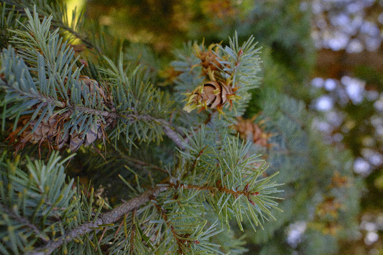
resize — long edge to 1600px. 338KB, down from 4,102KB: 12.1× smaller, and you cannot see the difference at this size.{kind=link}
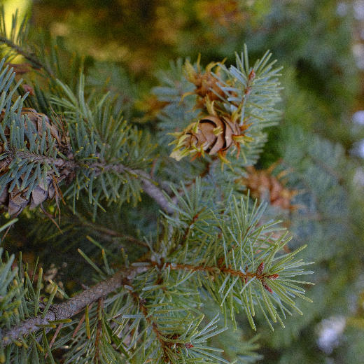
crop then resize — a square cut from the middle, 70KB. The strip is squares, so the cut is made once here rather than by the browser twenty-eight times.Three lines of instruction, and the whole set is rebuilt in about a minute. Worth saying plainly: the originals are never written to. Every one of these is a new file beside them.
03What it can tell you without being told
Before changing anything, a picture can simply be read. These are picture 5’s own numbers, measured rather than guessed:
| channel | darkest | brightest | average | middle | spread |
|---|---|---|---|---|---|
| red | 0 | 255 | 78 | 64 | 824 |
| green | 0 | 255 | 86 | 74 | 924 |
| blue | 0 | 255 | 61 | 42 | 686 |
Green averages highest and blue lowest, which is a photograph of a tree saying so in numbers. The middle value sitting below the average in all three says the same thing another way: most of the frame is darker than the average, and a few bright patches of sky are dragging that average up.
Drawn out fully, that is a histogram — how many pixels fall at each brightness, counted separately for red, green and blue. The chart below is the script’s own reading of picture 5, sixty-four steps from black on the left to white on the right:
histogram — the hump on the left is the shadow the whole picture sits in; the green line standing above the others through the middle is the tree. Nothing is changed to draw this; it is only counting.The same reading of picture 3 comes out completely differently: its middle value is 6 out of 255 against picture 5’s 70. More than half of that frame is nearly black. That single number is enough to tell the two pictures apart without looking at either of them, and section 08 uses exactly that.
04The colours it is made of
Every pixel dropped into one of sixty-four boxes of colour, the boxes counted, and the eight fullest given back — each one shown as the average of everything that landed in it rather than the box’s own middle. A palette, taken off the photograph rather than chosen.
#1d211443.5%#50592f12.7%#5c6b5012.7%#9dad906%#909b6e5.7%#3946285.7%#7788644%#dfebd22.9%
Forty-three per cent of picture 5 is within a shade of #1d2114 — the deep green-black between the needles. The same reading of picture 3 puts 78.9% of the frame in #090905, which is very nearly black:
#09090578.9%#a8a1938.2%#6d65554.1%#9289763.9%#564a311.7%#857a651.5%#453a260.9%#c3bbac0.5%
05The plain changes
The operations everyone expects. Worth having on one page because the library does them in a line each, on any picture, without opening anything.

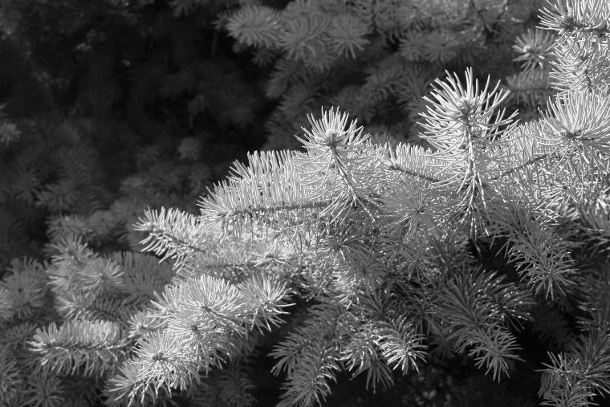
grey — colour discarded, brightness kept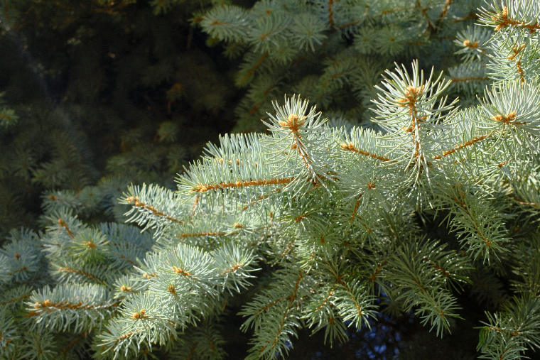
increaseContrast — the darkest pixel pushed to black and the brightest to white, everything else stretched between them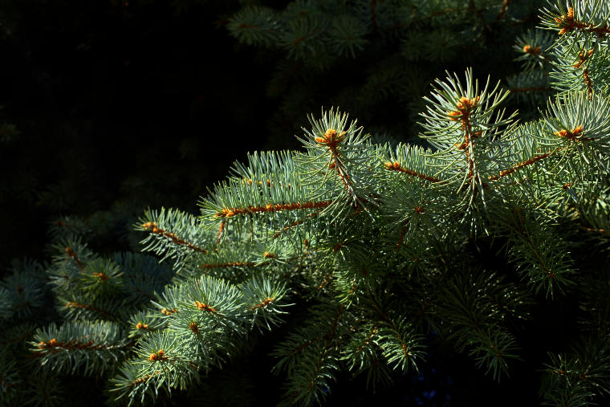
level — gamma 0.45: the shadows opened up without touching the highlights, which is what pulls the branch out of the dark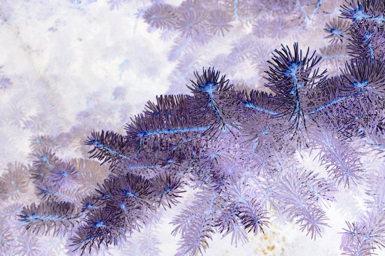
invert — every value turned round. A negative, and the fastest way to see what a picture’s shadows are actually holding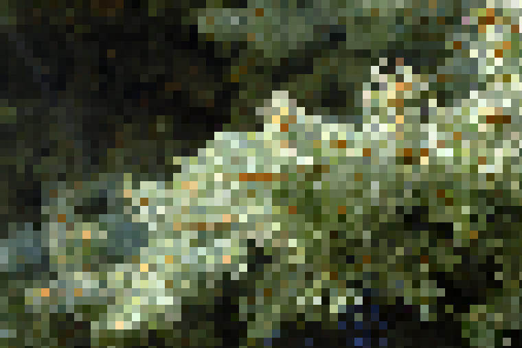
pixelate — twelve-pixel cells, each taking the colour of its middle06Two ways of softening
These two look alike and are not. A blur averages each pixel with its neighbours, so everything goes — grain, edges, detail, all of it. A median filter takes the middle value of each neighbourhood instead of the average, which throws out speckle while leaving an edge standing where it was. It is the one to reach for when a picture is noisy but you still want it to look like a photograph.
gaussianBlur — sigma 4. 32KB against the original’s 108KB, because there is so much less left to storemedianFilter — seven-pixel cells. The needles keep their edges; what goes is the speckle between them07Edges
Here it starts doing something you could not do by hand. A gradient filter measures how fast the brightness is changing at every point — across the picture and down it — and draws that instead of the picture. Flat areas come out black; anywhere the picture changes quickly comes out bright.
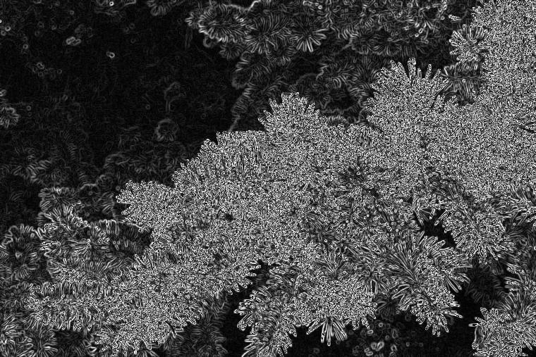
gradientFilter — a Sobel pair. Not an outline yet: every edge is a wide smear, as wide as the change is gradualCanny takes that further, in four steps: soften the picture, measure the gradient, throw away everything that is not the very top of its own ridge, and then keep only the lines that are either strong or joined on to something strong. What comes back is a line drawing — every needle on the branch, one pixel wide.
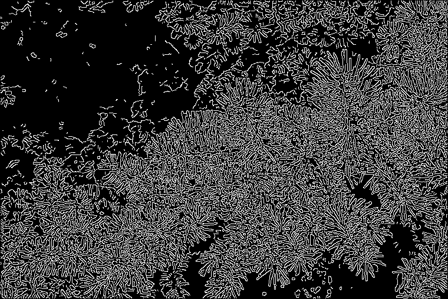
cannyEdgeDetector — 22.8% of the frame is lit; the other 77.2% is thrown away. Nobody told it what a needle is08Where the light stops
Picture 3 is white flowers on dark leaves, which is about as clean a division as a photograph offers. A threshold divides a picture in two at some brightness: in, or out. The question is always which brightness, and the good answer is not to choose one — Otsu’s method reads the picture’s own histogram (section 03) and picks the cut that separates it most cleanly into two groups.
On this photograph it chose 74 out of 255, and 19.1% of the frame came back as “in”.
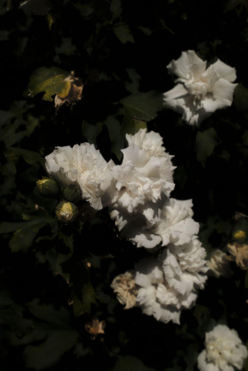
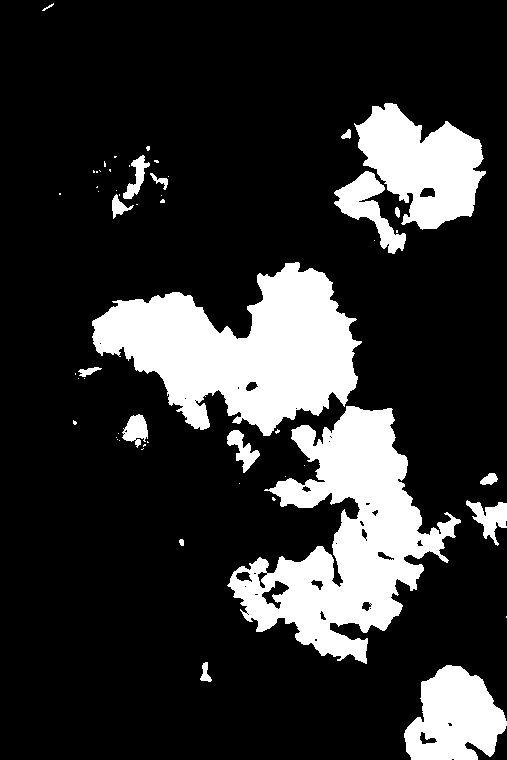
threshold, Otsu — a mask: every pixel either in or out, nothing in between09Counting what it found
A mask is not a picture any more — it is a set of regions, and regions can be counted and measured. Tidy the mask up first (shave off the specks, close the small holes), then gather every island of touching pixels bigger than 400 of them. There were 8. Drawn back onto the photograph:
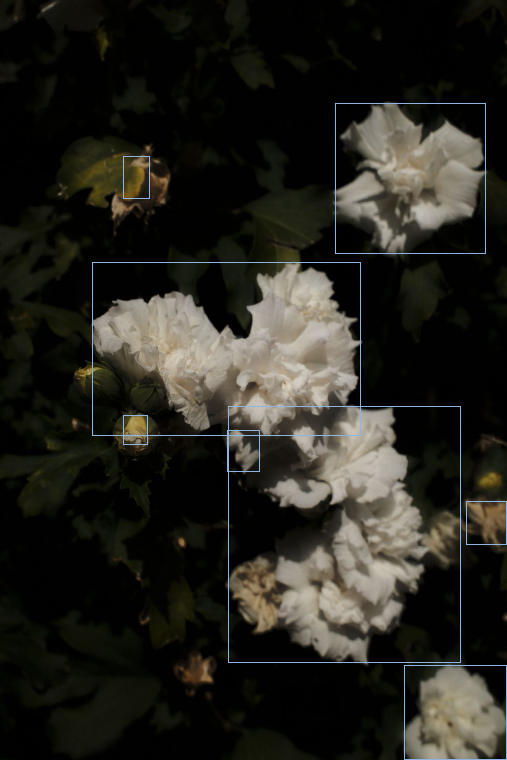
fromMask, getRois, drawRectangle — the boxes are drawn by the script onto the picture, not laid over it in the pageAnd each one can be measured. Roundness is 1 for a circle and falls away as a shape gets ragged; solidity is how much of the shape’s own convex hull it actually fills, so a blob with bays bitten out of it scores low.
| region | area, px | box | roundness | solidity |
|---|---|---|---|---|
| 01 | 25,912 | 269 × 174 | 0.44 | 0.77 |
| 02 | 25,700 | 233 × 257 | 0.48 | 0.64 |
| 03 | 11,981 | 151 × 151 | 0.6 | 0.74 |
| 04 | 6,781 | 103 × 95 | 0.74 | 0.89 |
| 05 | 879 | 41 × 44 | 0.38 | 0.71 |
| 06 | 587 | 33 × 42 | 0.39 | 0.71 |
What it did not do is understand the picture. It found bright regions, not flowers. The two biggest are one cluster of blooms that the shadow between them happened to split in half, and a bloom in deep shade is missing altogether. That gap — between bright and flower — is the whole difference between this kind of tool and the kind that recognises things.
10The photograph as specks
This site draws almost everything in specks — the wood down Pineward’s margins, the crowd on Almost Human, the contact sheet, the search page’s ground. So: read picture 5’s brightness on a five-pixel grid, put a dot at every crossing, and make the dot bigger and lighter the brighter the reading. The photograph itself is never shown. It is measured, then drawn again from the measurements.
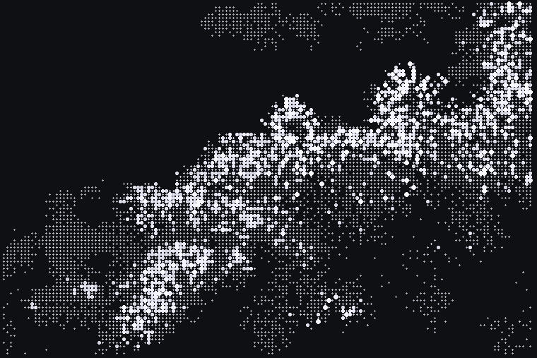
grey, getValue, drawCircle — about fifteen thousand dots, each one sized by what the photograph read at that point. The brightness is squared first, so the dark stays properly darkThis is the one that seems worth keeping. It is the site’s own language, applied to the owner’s own photographs — and it is made once, as a file, rather than drawn by a script in the page every time somebody opens it.
11Finding the same picture again
A question the repository actually has: which original in your gallery folder did each web copy come from? Nothing anywhere records it. So: bring two pictures down to a 64 × 64 grey thumbnail and measure the difference between them pixel by pixel — 0 is identical, 255 is black against white.
The easy case first, to prove the method is doing anything at all. Take picture 5’s own web copy and look for it among all twenty-eight: it finds itself at 0, and the next nearest picture is 57 away. That gap is what a method working looks like.
Then the real one. An original of 39.8 megapixels, looked for among the twenty-eight. Best answer: pineward-11.jpg at 37.3 — with the runner-up at 44.1 and the worst at 74.2. A thin margin, and it is right:
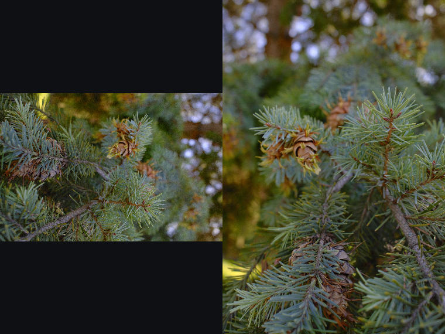
computeRmse — the original on the left, the copy it matched on the right. Same branch, same conesThe margin is thin for a reason worth knowing: the web copy is a crop. The original is a wide frame; the copy standing in the gallery is an upright piece cut out of the middle of it and enlarged. More than half of what was being compared is not in both pictures at all. That the right answer still came out on top is the method being robust; that it came out by seven points rather than fifty is the method telling you honestly that it is not certain.
Which is the useful lesson about all of this. The tool is happy to give an answer to anything. Reading how far ahead that answer is, is your job.
12Every picture at once
Twenty-eight photographs read, brought to one size and laid into a grid — an actual contact sheet, which is the thing the Scent descriptions page is named after. One pass, no handling.
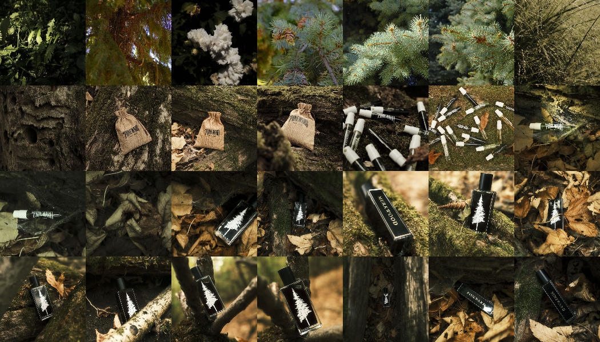
resize and copyTo — the whole Pineward gallery on one sheet, 198KB13What it cannot do
Three limits, plainly, because they decide whether any of this is useful to you.
It cannot run in the browser. Not on this site. Every picture above was made on a machine and committed as a file. That is a feature rather than a hardship — the work is done once instead of by every visitor — but it means nothing here can respond to a pointer or change as somebody scrolls. The drawings on this site do that; these do not.
It does not know what anything is. It found eight bright regions, not eight flowers. Recognising a thing is a different kind of tool entirely.
It is another thing to install. This repository has no build step and needs nothing to publish — that is deliberate, and this does not change it. The library is not in package.json; it is installed only when the script is run, which is why the script says so at the top of itself.
What it is good for, on this site: making and remaking the web copies, cutting thumbnails, building contact sheets, reading a photograph’s own colours so a page can be set in them, and turning photographs into the drawn language the rest of the site already speaks.